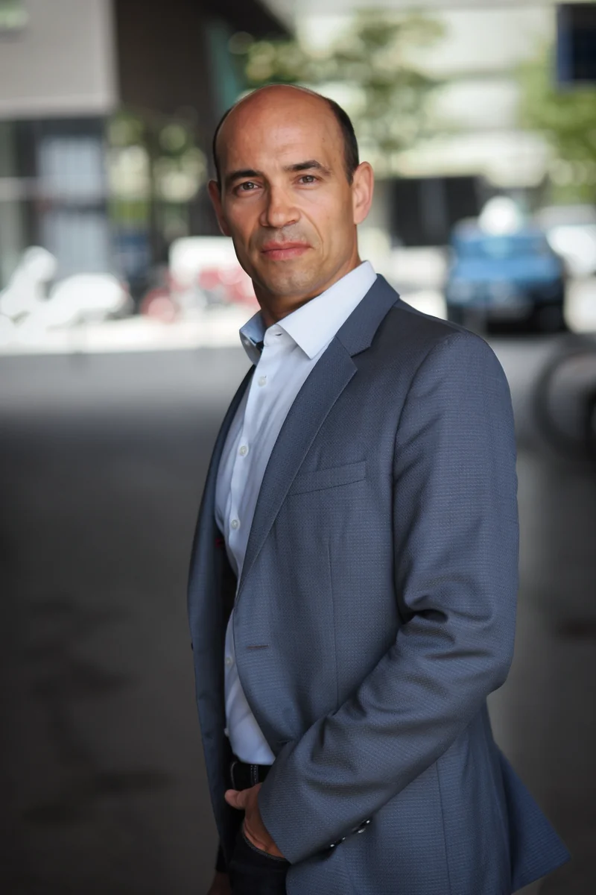

Mag. Tamas Toth
Commercial agent in Vienna with two decades of sales experience in Austria and Hungary — analytical in thinking, operational in doing.
Who I am.

I'm a commercial agent based in Vienna, born 1977 in Veszprém, Hungary, professionally rooted in Austria for over two decades. My career combines a business administration degree from the Vienna University of Economics and Business with first-hand sales, buying and trade practice.
What drives me: solving market problems where it's not enough to write a plan — where someone has to drive to the customer, run the conversation and follow up the offer the next day.
Stations.
-
2024–2025
Trainer and apprentice instructor
for commercial apprentices at ibis acam Bildungs GmbH, Vienna. -
2022–2024
Self-employed sales representative
market research and protein bar sales, acquisition in health food and specialty retail. -
2022
Sales Manager at Ahrend Austria GmbH, Vienna
office furniture project business, public tenders, new customer acquisition. -
2018–2022
Key Account Manager and sales representative
at Inwetech / Sylvia Art & Design — sales of print graphic design, printing and distribution. -
2017
Key Account Manager at Sapa Profiles / Hydro Extrusion, Székesfehérvár
technical aluminium sales. -
2014–2019
Direct Sales Promoter and Team Leader, Stargate Group
tastings, promotions, team leadership. -
2012
Junior Category Manager at REWE International, Vienna
central buying for dairy products. -
2007–2012
Hungary/Austria Coordinator, Mondial & Allianz Global Assistance
emergency call centre and mobility guarantee in German, Hungarian, English. -
2001–2007
Marketing Assistant at Freecard Media
print media production, promotional material distribution. -
1997–2001
Junior Broker, Inter-Europa Bank, Veszprém
securities trading.
How I work.
- Honest. I promise what I can keep.
- Prepared. Every meeting is preceded by research.
- Traceable. I deliver reports the client can read and verify.
- Confidential. Enquiries, negotiations and conditions are handled discreetly.
- Multilingual in thinking. I translate not just words, but business logics.
Precious metals, technology metals and rare earth elements.
Since 2014 I have been active in physical precious metals, strategic metals and technology metals, representing companies in Austria. This includes gold, silver, platinum and palladium as well as rare earth elements and technology materials such as neodymium, dysprosium, terbium, indium, gallium, germanium, cobalt and lithium.
In these markets, trust, accurate documentation, purity, quality, secure storage, industrial applications and multilingual regulated communication matter. I support clients with operational commercial representation, market development and sales work between Austria and Hungary.
Three business languages.
- Hungarian — native (C2)
- German — business-fluent (C1)
- English — Business English (B2 with C1 course certificate)
Formal credentials.
- Member Vienna Chamber of Commerce — Trade Division, Commercial Agents Group
- Active business licence as commercial agent — GISA number 32963588
- Magister of Social and Economic Sciences (Vienna University of Economics and Business)
- Erasmus semester at Aarhus School of Business, Denmark
- SAP user certification (MM, SD, WM)
- WIFI course "Legal framework for commercial agents"
- WKO course "AI-supported CRM for commercial agents"